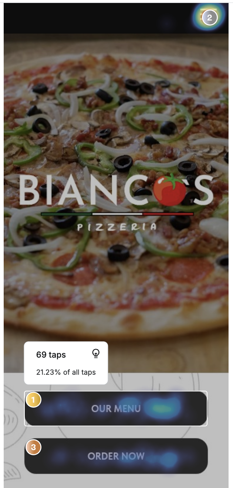
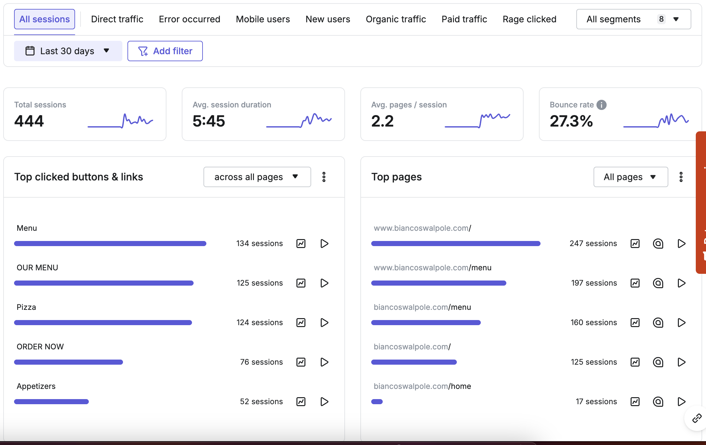
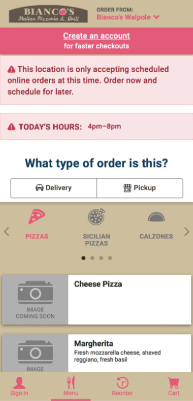
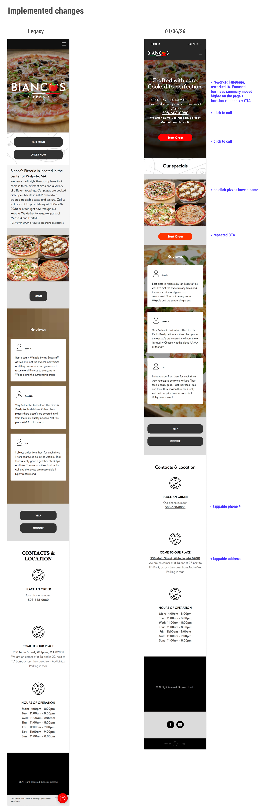
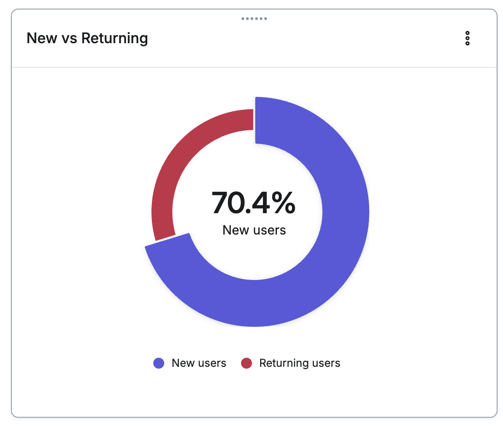
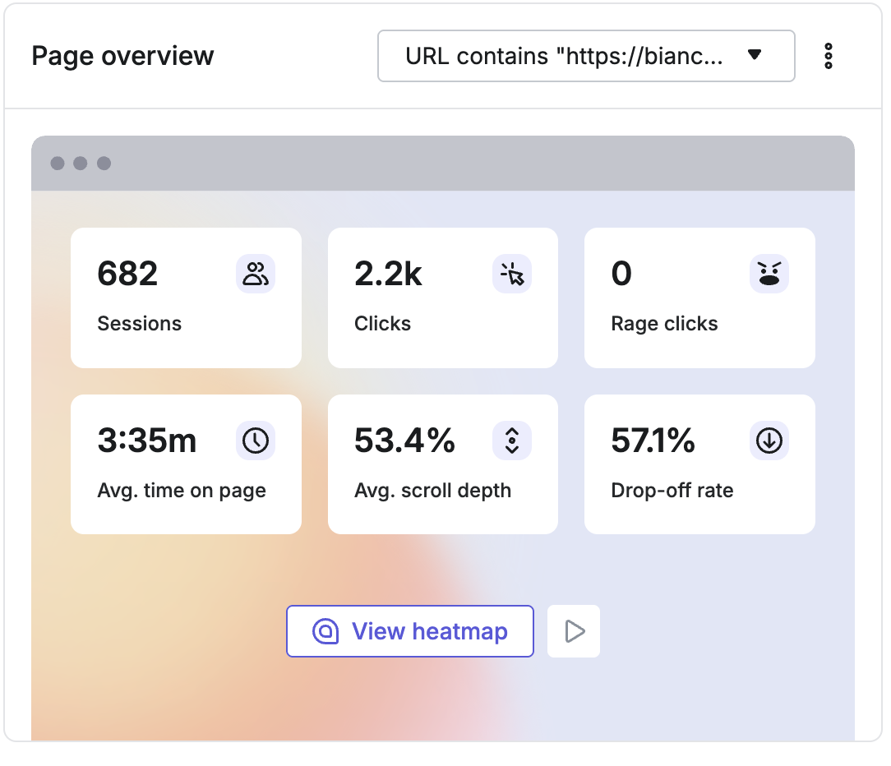

The brief
Bianco's is an independent, woman-owned thin-crust pizzeria that has served Walpole for decades. They have a loyal customer base, their own delivery drivers — a deliberate choice to avoid Uber Eats and protect staff livelihoods — and a website that wasn't doing its job. Only about a third of orders were coming in online; the rest by phone. My job was to find the friction, remove it, and build the measurement foundation to keep improving.
What the data showed before I touched anything
Hotjar and Microsoft Clarity ran in parallel on the legacy site for 30 days at 100% capture. A few numbers told the story quickly.


Clarity session recordings sharpened the picture further. Users tapped "OUR MENU" expecting to get closer to ordering and landed on a long text-only list with no photos, no path forward, and item headers underlined like links that did nothing when tapped. Recordings showed repeated back-and-forth navigation. The phone number wasn't tappable. The address wasn't tappable. Contact info sat below the fold for a user base that was 87% new.
Three participants. One finding none of them were asked about.
An unmoderated study with three participants via Hotjar — two scenarios each: browse naturally, then attempt a specific order. The sessions confirmed the analytics patterns and surfaced one finding I hadn't fully weighted going in.
All three cited missing food photography without prompting — three strangers, no leading questions, the same observation. When that happens it stops being an assumption and becomes a confirmed finding. It's the strongest single insight in the project.
Shosh also uncovered a bug on the Speedline ordering platform — not on the Bianco's site — where switching from delivery to pickup wiped all previously entered address data. Documented and flagged to the owner. The website can clear the path to ordering, but a broken handoff still kills the conversion.

Every change is traceable to a data point or a research observation.
Not a visual refresh — targeted interventions within the existing Tilda CMS. No rebuild, just friction removal.

| What changed | The evidence behind it |
|---|---|
| "OUR MENU" + "ORDER NOW" → single "Start Order" | Heatmap: wrong button winning at 21% of taps. "Start Order" implies browsing, not immediate commitment — lower barrier than "Order Now". |
| Phone number → tappable click-to-call | Clarity recordings: users tapping the number expecting a native dialer. Nothing opened. |
| Anonymous image grid → named, clickable specials | Image grid had 0.31% tap rate — not perceived as interactive. All three user study participants wanted to see food before committing. |
| Business info → above the fold | 87% of users were new. Location, phone, and delivery area need to be visible within seconds. |
| Single CTA → CTA repeated mid-page | Users who scrolled past the hero had no second chance without scrolling back up. |
The signals that matter are moving. One gap remains.
⚠ Hotjar moved to free tier post-redesign — 35% traffic sampling. Session counts reflect that. Behavioural ratios remain valid. Clarity runs in parallel at 100% capture.


| Metric | Legacy Aug 2025 | Post-Redesign Jan–Mar 2026 | |
|---|---|---|---|
| Returning users | 13.1% | 29.6% | ↑ Significant |
| Avg session duration | 5:45 | 6:03 | ↑ Positive |
| Rage clicks | 2 | 0 | ↑ Positive |
| Bounce rate | 27.3% | 41.7% | Likely artifact |
The rise from 27.3% to 41.7% is most likely a measurement artifact. In the legacy site, clicking into the static menu created a second pageview — artificially lowering the reported bounce rate. Now a successful session (land → tap Start Order → go order) reads as a single-page bounce. The number going up may mean the site is working better, not worse.
"Menu" is still the #1 clicked element at 622 sessions post-redesign and still routes to the static dead-end page. The redirect to Speedline is the next action. Until it ships, a large share of engaged users are still hitting a wall.
The fundamental constraint throughout: Hotjar and Clarity stop recording the moment a user leaves for Speedline. The most important event — did this visit result in an order — is invisible. Every metric above is a proxy. A Speedline UTM inquiry is pending; if passthrough is supported it creates a partial conversion bridge.
The tactical work is done. The strategic work is just starting.
The immediate friction has been removed, but the engagement scope is broader than a redesign. The menu redirect to Speedline needs to ship. Start Order needs to be configured as a conversion event. A 30-day clean baseline needs to be pulled post-redirect before any further changes are made.
Beyond the technical: Bianco's has a brand story that hasn't been told yet. Long-tenured kitchen staff. Their own delivery drivers. A deliberate decision not to join Uber Eats — made to protect their people, not their margins. That story is genuinely interesting and will resonate with a community-minded local audience. The outstanding work includes developing a content direction for social media rooted in that narrative, a marketing calendar tied to holidays and local moments, and SEO groundwork — Google Business Profile, Yelp consistency, local search keywords. A user test of the current post-redesign experience and a site map documenting current and proposed structure are also planned. None of this is scope creep. It's the difference between fixing a website and actually growing the business.
What this project is actually about.
This wasn't solved with design alone. It required learning a new CMS under pressure, navigating a third-party platform I couldn't modify, building a measurement framework with free tools, and making confident decisions with incomplete data. The Speedline tracking gap is unresolved. The menu redirect hasn't shipped. A case study that hides those things isn't a case study — it's a highlight reel. The skill is visible in how you navigate constraints, not in pretending they didn't exist.
AI tools were part of the workflow throughout. Claude was used to synthesise research notes, pressure-test interpretations, and maintain a living project document as the engagement evolved. Stitch accelerated early visual exploration. The point wasn't to offload thinking — it was to spend more time on the decisions that actually required judgment and less time on the work that didn't.